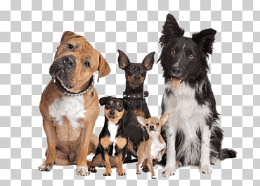
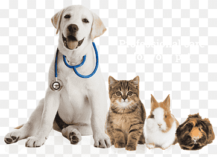

¿Queres saber mas sobre nosotros? ¡Aca tenes la respuesta!
La veterinaria es una disciplina esencial que garantiza no solo la salud y el bienestar de los animales, sino también la protección de la salud pública y el equilibrio de los ecosistemas. La convivencia entre humanos y animales es una realidad cotidiana que requiere cuidado, conocimiento y responsabilidad. La veterinaria existe para prevenir enfermedades zoonóticas, asegurar una producción animal ética y segura, y brindar atención médica a millones de animales de compañía que forman parte integral de nuestras familias. En un mundo donde los vínculos con los animales son cada vez más profundos, el rol del médico veterinario es insustituible y cada día más relevante.

Nos llevó el amor profundo por los animales, la curiosidad científica, y una vocación de servicio que trasciende lo profesional. Ser veterinarios no es simplemente una elección académica: es un compromiso con la vida, con el sufrimiento ajeno, y con la posibilidad de sanar. Cada uno de nosotros fue marcado, en algún momento, por una experiencia personal —un animal enfermo, una conexión emocional, una injusticia hacia un ser que no puede defenderse— que nos impulsó a estudiar, a formarnos y a dedicar nuestra vida a esto. Lo que nos trajo aquí fue la convicción de que podíamos hacer una diferencia real, cuidando a quienes no tienen voz, pero sí derechos.

Lo más hermoso de nuestra profesión es la posibilidad de transformar dolor en alivio, sufrimiento en bienestar, y miedo en confianza. No hay nada más gratificante que ver a un animal recuperar su salud, volver a comer, a jugar, a moverse, y sentir que fuimos parte de ese milagro. También está la mirada agradecida de un tutor, la emoción de un niño que ve sanar a su mascota, o la tranquilidad de una familia que sabe que su compañero de vida está en buenas manos. En cada consulta, en cada cirugía, en cada pequeño gesto, encontramos un motivo para seguir. Porque en la veterinaria, cada día es una oportunidad para sanar, aprender y dar amor.